Entrena.
Registra.
Mejora.
ImberGym es tu diario de entrenamiento para el gimnasio, en casa y al aire libre: planes, ejercicios animados, récords y estadísticas, además de rutas GPS con Trackshow, nutrición y suplementos. Sin cuenta, sin nube: tus datos se quedan en tu móvil.
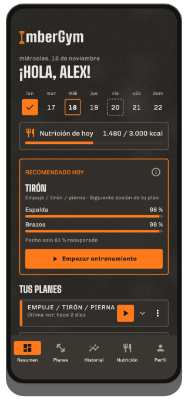
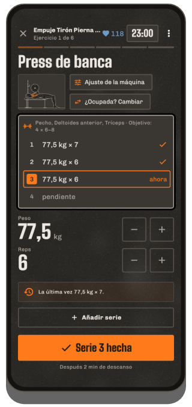
Todo para entrenar.
En un solo lugar.
Desde la primera serie hasta la ruta de montaña: ImberGym lo anota, lo calcula y te muestra cómo mejorar.
Un ejercicio.
Un foco.
Valores de la última vez ya rellenados, sugerencia de progresión y descanso también en la pantalla de bloqueo.
La cámara
cuenta contigo
Flexiones, sentadillas, plancha: se detecta en el dispositivo, ninguna imagen sale del móvil.
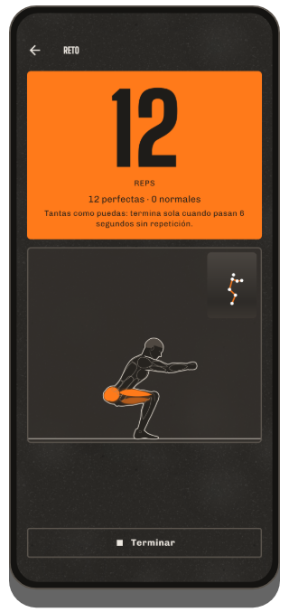
Récords justo después de la serie
Intervalos con avisos de voz, también en el reloj
Trackshow
Tu ruta GPS como vuelo de cámara sobre curvas de nivel, con momentos destacados para compartir.
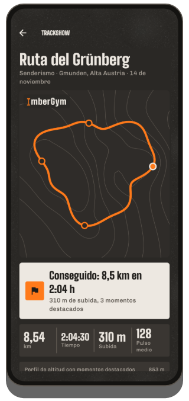
Mapa corporal
y recuperación
Mira qué músculos has entrenado y cuáles ya están listos.
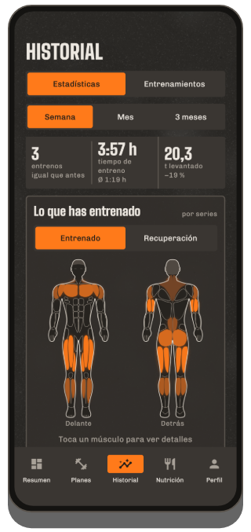
Qué hace ImberGym
Todo lo que necesitas para entrenar, sin cuenta y sin nube.
Entreno
Progreso
Cuerpo y nutrición
Y más
Así es ImberGym
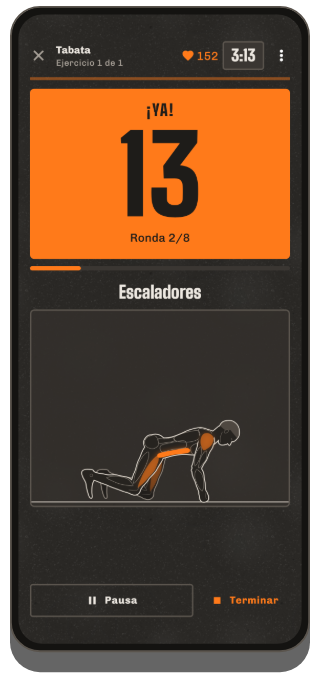
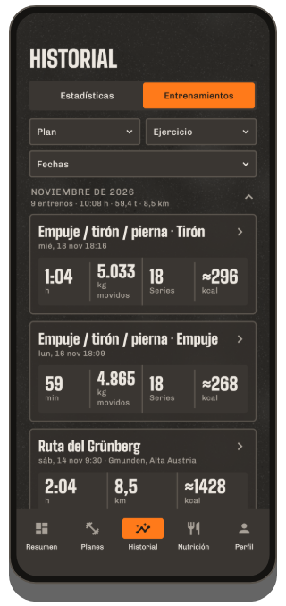
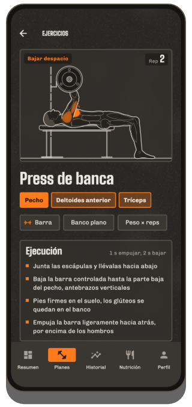
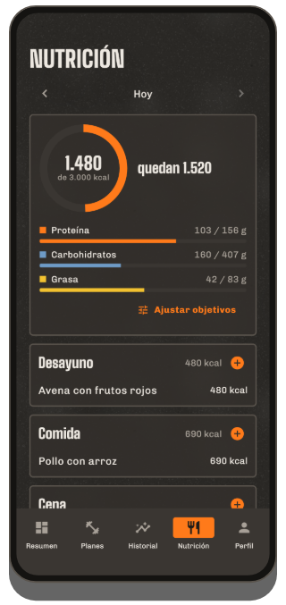
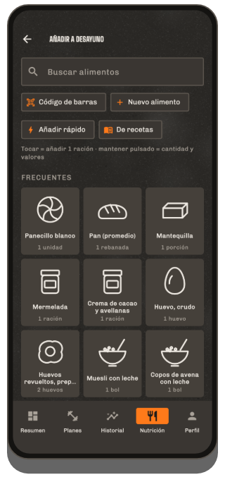
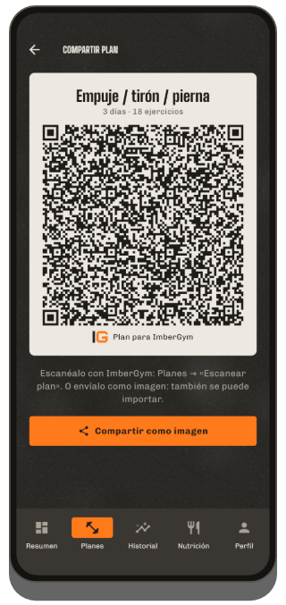
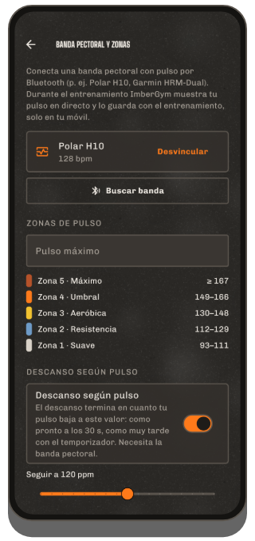
Fuera de casa
Tus datos.
Tu móvil.
Instala y empieza, sin registro.
Todo guardado en el dispositivo, copia como archivo.
Sin rastreadores ni herramientas de análisis.
Gratis y Premium
Gratis
- Entrenamientos completos con temporizador de descanso
- Hasta 5 planes y 5 ejercicios propios, todas las plantillas
- Base de datos de ejercicios con animaciones
- Historial, récords, estadísticas, resumen semanal y anual
- Pulso del reloj vía Health Connect, banda pectoral en directo con zonas y descanso según el pulso
- Suplementos con recordatorios, reto con contador de repeticiones por cámara
- Contador de calorías con catálogo de alimentos y código de barras, peso
- Pasar planes por código QR, compartir entrenamientos como tarjeta
Premium
- Planes y ejercicios propios ilimitados, importar planes por código QR
- Mapa corporal, recuperación, evolución de grasa corporal y peso
- Entrenamiento por intervalos (Tabata y más)
- Aire libre con GPS, Trackshow en vídeo
- App para el reloj (Wear OS)
- Gimnasios, tarjetas de socio, fotos de progreso
- Todas las recetas, objetivo de calorías dinámico
Mensual, anual o un único pago de por vida a través de Google Play: el precio actual lo ves en la app. Pruébalo gratis 7 días después de tu primer entrenamiento.
Disponible en Google Play¿Necesito una cuenta?
No. ImberGym funciona sin registro y sin servidor propio.
¿Dónde se guardan mis datos?
Solo en tu móvil. No hay nube, ni publicidad, ni análisis. Más detalles en la política de privacidad.
¿Funciona la app sin conexión?
Sí. Solo dos cosas usan internet: buscar un código de barras desconocido en Open Food Facts y el nombre del lugar de una ruta GPS (para ello se envía el punto de inicio al servicio de ubicación de Android). Todo lo demás funciona sin conexión.
¿Cómo llega el pulso de mi reloj a ImberGym?
A través de Health Connect, el almacén de datos de salud de Android. En la app de tu reloj, activa Health Connect y permite «Frecuencia cardiaca»: pueden hacerlo, entre otras, Samsung Health, Garmin Connect, Fitbit, Polar Flow, Withings y Zepp (Amazfit). Después toca «Cargar pulso del reloj» en los detalles del entrenamiento en ImberGym. Huawei: Huawei Health no escribe en Health Connect; la app «Health Sync» (Play Store) puede transferir los datos: origen Huawei Health, destino Health Connect, selecciona «Frecuencia cardiaca». Consejo: inicia también un entrenamiento en el reloj para que mida de forma continua.
¿Qué bandas pectorales funcionan?
Cualquier banda pectoral Bluetooth con el perfil estándar de frecuencia cardiaca, p. ej. Polar H9/H10, Garmin HRM-Dual o Wahoo TICKR. Vincúlala una vez en el perfil, en «Banda pectoral y zonas»: después se conecta sola cada vez que entrenas.
¿Cómo comparto un plan?
En el editor del plan, toca el icono QR y muestra el código o envíalo como imagen. La otra persona lo escanea en la pestaña «Planes» con «Escanear plan», también desde una imagen. Todo el plan va dentro del código, no se sube nada.
Cambio de móvil: ¿qué pasa con mis datos?
En el perfil, en «Datos y copia de seguridad», crea una copia y guárdala p. ej. en Google Drive. En el móvil nuevo, elige «¿Móvil nuevo? Restaurar copia de seguridad» en la primera pantalla.
Vengo de Strong o Hevy: ¿puedo traer mis entrenamientos?
Sí. Importa la exportación CSV de tu app anterior en «Datos y copia de seguridad» → «Importar entrenamientos». ImberGym asigna los ejercicios y primero muestra una vista previa.
¿Se suben mis fotos de progreso?
No. Se guardan en una carpeta privada de la app, no aparecen en la galería e incluso quedan excluidas de las copias de seguridad de Android.
¿Puedo ocultar la nutrición?
Sí. Toda la sección se puede desactivar en el perfil: ImberGym queda como un diario de entrenamiento puro.
¿Cómo borro mis datos?
Las entradas sueltas directamente en la app; todo a la vez desinstalando la app.